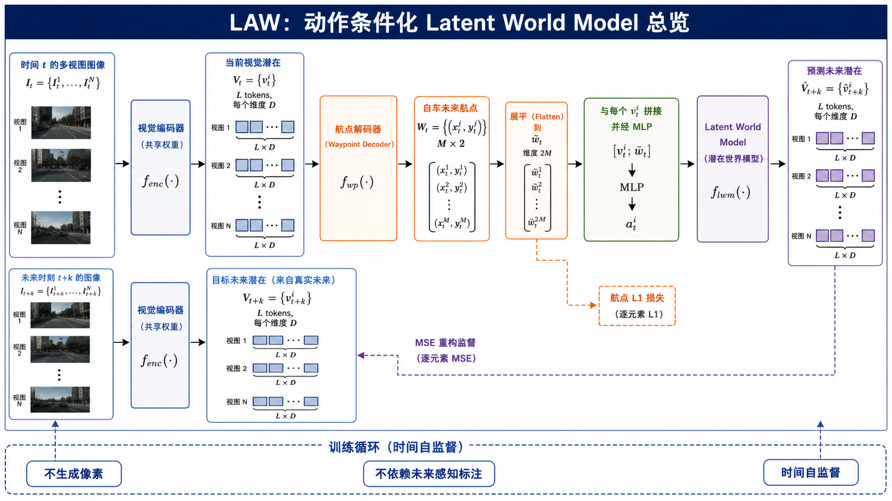
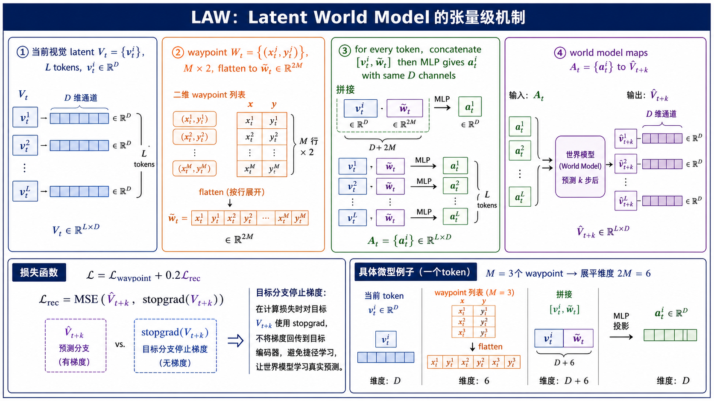
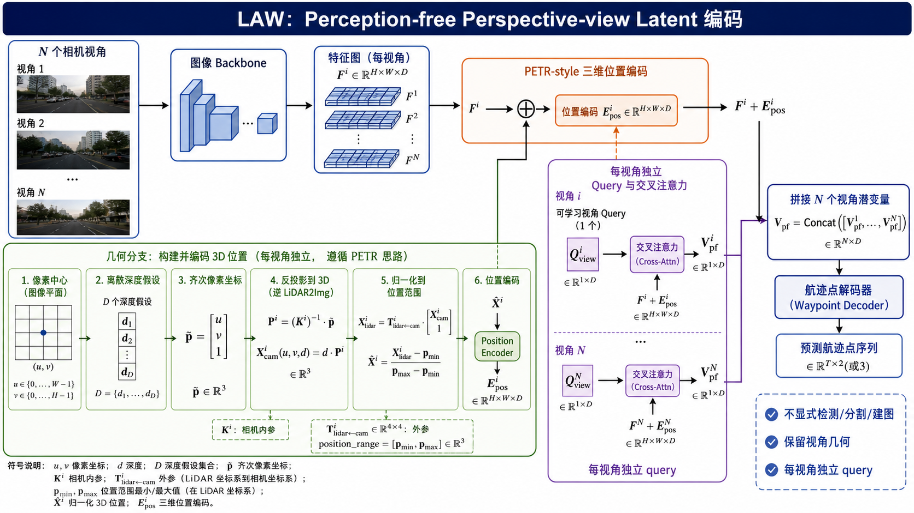
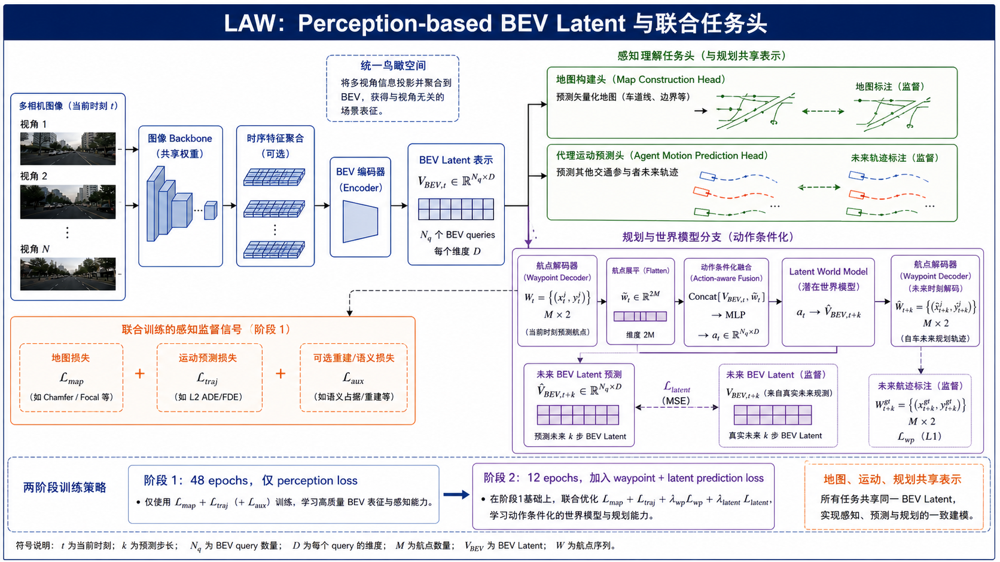
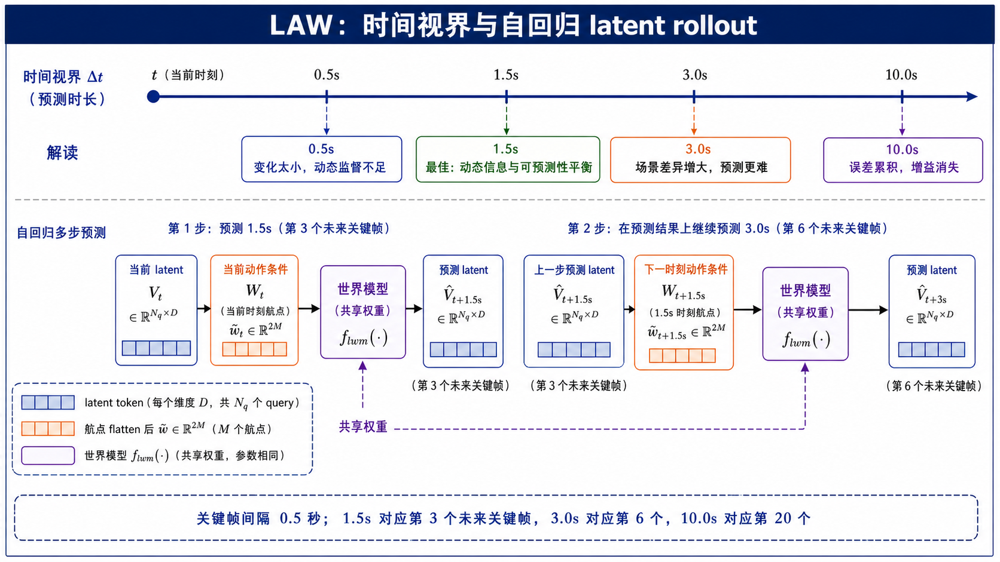
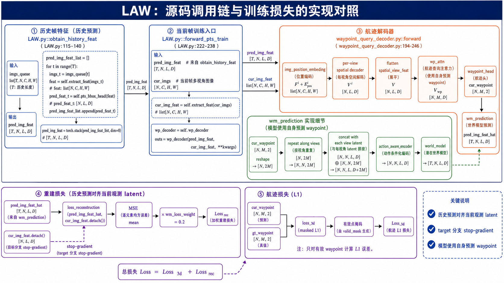

LAW — Latent World Model
把“未来会怎样”变成端到端自动驾驶表示的训练信号
Yingyan Li 等 · ICLR 2025 · arXiv:2406.08481v2（2025 年 2 月 28 日）
官方源码：BraveGroup/LAW · commit：b2f6a784247072923c477ab92324d3aa5a9759bf
一、先建立正确的阅读主线
这篇论文不主张生成一段看起来逼真的未来视频，而是给端到端驾驶器增加一个短期、动作条件化的 latent 预测器。读者应沿着下面这条主线阅读：当前图像 → 当前视觉 latent → 当前 waypoint → 动作条件化 latent → 未来 latent → 与未来观测对齐。后文每张图都会紧跟在它解释的机制后面，图中变量、模块、箭头和源码调用不会被拆到另一个孤立章节。
贡献与边界
LAW 有三个相互咬合的设计。第一，预测目标是编码器 latent，不是像素，因此减少与驾驶无关的纹理和光照负担。第二，预测条件包括模型当前输出的 waypoint，使 world model 学习动作导致的未来变化。第三，同一 latent prediction 接口可以接在 perception-free 的 perspective-view 分支，也可以接在 perception-based 的 BEV 分支。它不是完整物理模拟器，也不提供独立的安全证明；它更准确的名字是“规划器内部的局部动作条件化 latent predictor”。
二、总览：训练闭环到底在约束什么
先看图 1 的上半部分。当前时刻的 N 个相机视角进入共享视觉编码器，输出按视角组织的当前 latent。waypoint decoder 读取这些 latent，输出 M 个二维未来位置。轨迹被展平为一个 2M 维向量，并复制到每个视觉 token，与 token 拼接后送入动作感知编码器和 latent world model，得到未来 latent 预测。

图 1 下半部分表达训练而非推理：未来图像在训练时提供 target latent，预测分支与 target latent 做 MSE；部署时没有未来图像，所以这条支路只留下训练后形成的表示能力。这个区别很重要，否则容易误以为 LAW 需要一个在线未来摄像头或像素级视频生成器。
总览图中的训练数据如何对齐
图 1 看起来有两条图像支路，但它们的时间角色不同。上方当前图像支路负责产生当前 latent 和 waypoint，并承担推理阶段真正会执行的计算；下方未来图像支路只负责在训练阶段建立 target。假设当前时刻为 t、预测间隔为 k，那么输入编码器的是 I_t，监督编码器读取的是 I_{t+k}。world model 不能读取 I_{t+k}，它必须仅依赖 V_t 和 W_t 生成预测。若实现中把未来图像特征直接拼回预测分支，就会造成未来信息泄漏，虽然训练 loss 可能很好看，但部署时无法复现。
图中两处视觉编码器标注“共享权重”意味着当前与未来 latent 位于同一表示空间。若使用完全不同、互不约束的编码器，预测 latent 与目标 latent 的 MSE 缺乏稳定语义。源码中的实现没有建立一个单独的像素 decoder，也没有输出 RGB 图像，因此 world model 的质量不能用 PSNR 或视频逼真度评估，而应该通过规划误差、collision 和跨基准驾驶指标判断。
waypoint L1 与 latent MSE 同时存在，是因为两者约束不同。L1 直接要求输出轨迹接近专家轨迹；MSE 则要求中间表示能够解释动作导致的短期未来。如果只保留 L1，模型可能学到当前帧到 waypoint 的捷径；如果只保留 MSE，模型可能预测出与错误动作一致的未来，却没有动力修正动作本身。
图 1 的逐箭头审计
第一条黑色实线从当前多视角图像指向共享编码器，表示图像先被逐视角抽取特征；第二条实线从编码器指向当前视觉 latent，表示 world model 不直接读取 RGB。当前 latent 分出两条支路：一条进入 waypoint decoder，形成模型准备执行的自车轨迹；另一条等待与这条轨迹融合。waypoint 指向 flatten 的箭头只改变张量排布，不执行运动学积分，也不把相对位移转换为绝对坐标。
flatten 指向逐 token 拼接的箭头表示动作向量沿 token 维广播。拼接模块中的 MLP 不是 world model 本身，它负责把通道数从 D+2M 压回 D，生成 action-aware latent；随后才进入 latent world model。world model 指向预测未来 latent 的箭头表示单步 latent dynamics。右侧预测结果向左下 target 的紫色虚线不是数据输入，而是训练 loss；图中箭头方向若读反，就会误以为真实未来 latent 被送入 world model。
未来图像到目标 latent 的下方实线表示 target encoder 的前向计算。共享权重只约束表示空间一致，不表示当前和未来图像在同一个 batch 位置被混合。目标 latent 旁边的“来自真实未来”强调它是观测编码结果；预测 latent 旁边的帽子符号强调它是模型输出。两者形状必须一致，MSE 才能逐元素比较。
总览图对应的源码入口
LAW.py:115-140 处理历史图像队列并逐帧调用 head；LAW.py:222-238 在当前帧汇合重建损失与 waypoint 损失。代码层面，论文总览图不是抽象流程图，而是由历史帧 prediction、当前帧 latent、waypoint 和 loss 组成的真实调用链。
flowchart LR I[当前多视角图像] --> E[共享视觉编码器] E --> V[当前视觉 latent] V --> D[waypoint decoder] D --> W[预测 waypoint] V --> C[动作条件化] W --> C C --> M[latent world model] M --> P[预测未来 latent] F[未来图像 训练时] --> T[共享编码器得到 target latent] P -. MSE .-> T W --> L[waypoint L1]
三、机制一：动作如何进入 latent，而不是只进入输出头
这一节对应图 2。先定义当前视觉 latent：它不是一个单独向量，而是 L 个 D 维 token 的集合。waypoint 是 M 个二维点，每个点包含自车坐标系中的 x、y。论文先把 M×2 的矩阵展平为 2M 维向量，再把这条完整轨迹附加给每一个视觉 token。

具体数值例子：M=3 时，轨迹可以是 ，展平后为六维向量 。若 D=256，则每个 token 先从 256 维扩为 262 维，再被 MLP 投影回 256 维。靠近左侧车辆的 token、车道边界 token 和天空 token 共享同一条动作条件，但因为自身视觉内容不同，得到的未来变化也不同。
图 2 四个面板的逐项对应
面板 ① 中每一行小方格代表一个 token 的 D 个通道，右侧括号标出总共有 L 行。这里的 token 可以来自展平的 perspective-view query，也可以来自 BEV query；论文故意用统一符号，使 world model 不依赖特定编码器。面板 ② 的 waypoint 表格按时间顺序排列，若训练标签表示相对位移，那么 head 输出和 GT 都应使用同一表示；测试指标计算前，源码会通过累积和将相对位移恢复为轨迹。
面板 ③ 顶部的单 token 图示解释一次 MLP 计算，下面的 L 行图示解释这个计算被应用到所有 token。大括号下的 D+2M 是拼接后的实际输入宽度，右侧 D 表示输出宽度。这个投影保证 world model 可以使用固定 hidden channel。面板 ④ 左侧竖排的 到 是完整动作感知 token 集合，右侧输出保持 L×D，表示预测目标仍与编码器 latent 对齐。
底部 loss 区域把预测分支和 target 分支画成两个框，是为了突出梯度方向：预测框有梯度，target 框通过 stopgrad 无梯度。它并不表示部署时存在两个模型副本。右下微型例子中的 D+6 是 M=3 的特例，换成论文实际 waypoint 数量后应使用 D+2M，不能把 6 写死进通用实现。
逐 token 条件化为何比全局拼接更强
一种更简单的实现是先把全部视觉 token 做全局池化，再与 waypoint 拼接。但这样会过早丢失空间差异：左侧车辆、右侧边界、前方信号灯都被压缩到一个向量中，world model 难以说明某条轨迹会具体改变哪个区域。LAW 保持 L 个 token 不变，只在通道维注入动作，因此 world model 仍可在 token 间建模局部空间关系和全局交互。
广播 waypoint 并不意味着每个 token 获得相同输出。动作向量只是拼接输入的一部分，MLP 同时读取 token 自身内容。形式上，第 i 个 token 的映射是 g(v_t^i,w_t)，第 j 个 token 的映射是 g(v_t^j,w_t)；虽然函数 g 和动作 w_t 相同，但 v_t^i 与 v_t^j 不同。这个结构类似在所有空间位置上应用同一条件网络，参数共享提高泛化，而局部输入维持差异。
图 2 的 M=3 示例还揭示一个工程问题：waypoint 数量 M 会直接改变动作条件的通道数 2M。更改规划 horizon 或 waypoint 采样密度后，action-aware encoder 的输入维度也要同步修改。若只改数据标签长度而没有改线性层输入，程序会形状报错；若通过截断或 padding 勉强运行，则可能改变动作语义。
梯度到底更新哪些模块
重建 loss 从预测 future latent 反向传播到 world model、action-aware encoder、当前视觉 latent 和产生 waypoint 的路径。由于 target 使用 detach，未来观测编码结果不从这项 loss 接收梯度。waypoint L1 则直接更新 waypoint head、waypoint attention 和共享视觉表示。两个梯度在共享编码器及规划 token 处汇合，这正是 latent prediction 能改善规划表示的原因。
需要强调的是，detach 不等于冻结整个视觉编码器。当前分支仍能从 waypoint loss 和预测分支得到梯度；被停止的是作为重建目标的未来观测 tensor。复现时可以对 cur_img_feat.requires_grad、传入 loss 前后的 tensor 和参数梯度做检查，确认不是误把预测分支也 detach。
源码实现：`wm_prediction` 的每一行在做什么
# projects/mmdet3d_plugin/LAW/dense_heads/waypoint_query_decoder.py:239-246
def wm_prediction(self, view_query_feat, cur_waypoint):
cur_waypoint = cur_waypoint.reshape(batch_size, 1, -1).repeat(1, num_tokens, 1)
cur_view_query_feat_with_ego = torch.cat([view_query_feat, cur_waypoint], dim=-1)
action_aware_latent = self.action_aware_encoder(cur_view_query_feat_with_ego)
return self.world_model(action_aware_latent)
第一行把 waypoint 序列整理成每个样本一条向量，并沿 token 维复制；第二行沿最后一维拼接视觉 token 与轨迹；第三行通过 action_aware_encoder 把 D+2M 的输入重新编码到 world model 使用的通道宽度；第四行才真正调用 world model。源码因此精确落实了论文中的“视觉 latent + waypoint → action-aware latent → future latent”，而不是只在最后预测头旁边增加一个额外输入。
损失与梯度边界
LAW.py:222-238 中，loss_reconstruction(prev_pred_img_feat, cur_img_feat.detach()) 将上一时刻 prediction 与当前观测 latent 对齐，随后乘以 self.wm_loss_weight；loss_3d 使用带有效掩码的 waypoint L1。detach 让未来观测 latent 成为固定 target，避免预测分支和目标分支一起移动答案。
有效掩码决定哪些 waypoint 进入误差。若未来轨迹因样本边界、无效帧或 padding 缺少部分点，直接对全部 M 个位置求 L1 会把填充值当作真实目标。源码将 mask 扩展到坐标维，与预测和 GT 一起传入 loss，从而只让有效时间点贡献梯度。
四、机制二：Perspective-view 分支如何保留三维几何
Perception-free 并不意味着没有空间信息。图 3 的关键是：图像 backbone 产生二维特征后，LAW 用 PETR 风格的三维位置编码把每个像素位置与一组候选深度关联起来，再用每个视角独立的 query 聚合出高层 latent。它不显式输出检测框、分割图或地图，但通过位置编码保留了视角几何。

图 3 几何支路的逐变量解释
像素中心 来自特征图位置而非原始图像逐像素位置，因此要结合 pad 后的图像高度和宽度恢复尺度。深度候选 沿相机射线展开同一个像素可能对应的三维位置。齐次坐标中的常数 1 使四维矩阵变换可以同时表达旋转和平移。图中从齐次坐标到三维点的箭头包含了深度缩放和外参逆变换两个步骤。
lidar2img 的命名表示从 LiDAR 坐标投影到图像，源码取逆得到从图像候选坐标返回 LiDAR 空间的变换。不同相机拥有不同矩阵，因此图 3 标注“每视角独立”。归一化公式将三维坐标映射到统一范围，随后 inverse sigmoid 与 position encoder 把几何数值转成可与视觉特征相加的 embedding。超出 position_range 的候选点可能对应无效或边界位置，配置错误会直接影响空间编码。
Cross-Attention 模块中，query 是可学习的规划读取器，key/value 来自带位置编码的图像特征。每视角 query 的数量决定输出 token 数，而 H×W 决定它读取的输入位置数。将所有视角的输出拼接后，序列顺序需要保持稳定，否则 waypoint attention 无法一致地区分视角来源。
从图像特征到 view latent 的形状变化
源码进入 forward 时，图像特征形状可写为 B×N×C×H×W。位置编码首先把每个视角的 H×W 位置展开，并为每个位置复制 D_depth 个深度候选。几何坐标在进入 position encoder 前包含三维位置，经过编码后重新成为与图像通道 C 对齐的 embedding，再与原特征相加。随后每个视角的 query 与本视角 H×W 个 token 做 cross-attention，输出固定数量的 view token。
图 3 中的字母 D 同时容易被读成“特征通道数”和“深度采样数”。论文公式中 D 主要表示 latent 通道，而源码 coords_d.shape[0] 的局部变量 D 表示深度 bin 数。二者处于不同作用域，不能根据名字相同就假设数值相同。报告图中用“D 个深度假设”描述几何支路，用 描述通道，是概念层表达；源码复现时应以配置中的实际变量为准。
每视角独立 query 的实际意义
前视、侧视和后视相机具有不同外参、可见区域和驾驶相关性。每视角独立 query 允许网络为不同视角学习不同的读取方式，例如前视更关注远处车道和信号灯，侧视更关注并线车辆和邻近边界。它们最终被拼接到同一 token 序列中，waypoint attention 再跨视角整合。
这种设计与 BEV 的差别是：Perspective-view 分支在聚合后仍保留 view identity，而 BEV 分支先把多视角信息映射到统一鸟瞰坐标。前者不需要显式 BEV 感知监督，结构较轻；后者空间解释更直接，但任务头和训练流程更复杂。
源码实现：`img_position_embeding()` 的坐标链
# projects/mmdet3d_plugin/LAW/dense_heads/waypoint_query_decoder.py:155-192 pixel_centers = img_pixel_locations.detach().view(B, LEN, 1, 2).repeat(1, 1, D, 1) coords_d = self.coords_d.view(1, 1, D, 1).repeat(B, num_sample_tokens, 1, 1) coords = torch.cat([pixel_centers, coords_d], dim=-1) coords = torch.cat((coords, torch.ones_like(coords[..., :1])), -1) coords[..., :2] = coords[..., :2] * torch.maximum(coords[..., 2:3], ...) lidar2img = torch.from_numpy(np.stack(img_metas[0]['lidar2img'])) img2lidars = lidar2img.inverse() coords3d = torch.matmul(img2lidars, coords).squeeze(-1)[..., :3] coords3d = (coords3d - position_range[:3]) / (position_range[3:6] - position_range[:3]) pos_embed = inverse_sigmoid(coords3d) coords_position_embeding = self.position_encoder(pos_embed)
这段实现不是简单的二维正弦位置编码。像素中心与 D 个深度假设组合成候选三维点，再使用 lidar2img.inverse() 将相机坐标关系还原到 LiDAR 坐标系，最后按位置范围归一化并编码。若更换数据集或相机标定，lidar2img、position_range 和深度采样契约必须同步检查。
五、机制三：BEV 分支如何把感知、运动和规划放到同一空间
Perception-based 分支与 Perspective-view 分支的差别不是“有没有 world model”，而是编码器 latent 的空间组织不同。图 4 中，多视角特征先被转换为统一 BEV latent，再分给地图构建头、agent motion prediction head 和规划/world-model 分支。BEV 让车道线、交通参与者运动和自车轨迹在同一鸟瞰坐标系中表达。

两阶段训练体现了梯度管理。若地图、运动、waypoint 和 latent 预测从随机状态同时启动，多个目标可能竞争表示空间；先用 48 epochs 建立稳定 BEV，再加入动作条件化未来预测，能够减少这种竞争。论文没有公开所有中间层数和 head 数，因此报告不自行补全这些细节。
图 4 每个监督箭头的含义
地图标注的绿色虚线只监督地图构建头的输出，未来轨迹标注只监督 agent motion prediction head；二者通过共享 BEV latent 间接影响编码器，但不会直接充当 future BEV latent 的 target。future BEV latent target 仍然来自未来帧经过编码器得到的观测表示，图中紫色 MSE 箭头对应这一监督。
规划支路左侧先产生当前 waypoint，再把 waypoint flatten 后与当前 BEV latent 融合。这一步顺序和 Perspective-view 分支一致：world model 使用的是当前策略输出，而不是地图 GT 或 agent GT。未来 waypoint decoder 位于预测 future BEV latent 之后，用来说明未来 latent 具有可供规划读取的信息；正式训练实现中应区分当前 waypoint 主任务和对未来 latent 的辅助预测。
阶段 1 方框中的地图损失、运动预测损失和可选重建/语义损失共同塑造 BEV；阶段 2 方框并不是删除这些 loss，而是在阶段 1 基础上加入 waypoint 与 latent prediction。若阶段 2 完全关闭感知监督，可能产生表示遗忘；具体是否保持所有 loss 应以配置和论文实现说明为准。
两阶段训练中各项 loss 的角色
阶段 1 只使用 perception loss，不代表模型只训练 backbone。BEV encoder、地图构建头和运动预测头共同建立统一空间，使 BEV query 学会道路结构和交通参与者运动。阶段 2 在这个表示基础上增加 waypoint 与 latent prediction，使同一 BEV latent 同时承担“当前结构是什么”“其他参与者会怎样动”“自车准备怎样走”“执行该动作后未来表示是什么”四类问题。
多任务的风险是梯度冲突。例如地图头希望强化静态车道边界，运动头关注动态 agent，waypoint 头关注可执行轨迹，latent loss 则关注跨时间可预测部分。两阶段策略不会彻底消除冲突，但避免所有任务在随机初始化时同时争夺表示。复现时若跳过阶段 1 直接联合训练，即使最终 loss 能下降，也不能与论文设置直接比较。
代码公开范围与解释边界
当前官方仓库主要公开了 perception-free 配置和 LAW 核心实现，BEV 版本的全部训练工程细节并没有像图 5 那样集中在单一 LAW 文件中完整呈现。因此本文对 BEV 分支的说明以论文方法和公开 VAD/BEV 组件接口为依据；没有公开的层数、head 数、所有 loss 权重和具体 stage checkpoint 衔接不做肯定式补全。
这也是阅读图 4 时需要区分的层级：绿色任务头是论文框架级组件，紫色 action-aware world model 是 LAW 新增机制；它们共享表示，但不应把地图标注误写成 world model 的直接监督。world model 的直接 target 始终是未来 latent。
BEV 分支的任务契约
| 模块 | 输入/输出 | 训练监督 | 作用 |
|---|---|---|---|
| BEV encoder | 多视角特征 → | 由下游任务共同约束 | 统一鸟瞰空间 |
| 地图构建头 | BEV latent → 地图结构 | 地图标注 | 车道线、边界等 |
| 运动预测头 | BEV latent → agent future trajectories | 未来轨迹 | 交通参与者变化 |
| LAW world model | BEV latent + waypoint → future BEV latent | 未来 latent MSE | 动作条件化时序约束 |
六、机制四：时间监督、历史队列与 rollout
LAW 的时间监督不是把相邻两帧 latent 简单拉近，而是让上一时刻的预测对齐当前时刻的观测。设队列中有 t−1 和 t：t−1 经过 head 产生下一 latent 预测；t 经过共享编码器产生当前观测 latent；二者做 MSE。未来图像只用于训练 target，不参与部署前向。

图 6 时间轴中的训练含义
0.5 秒对应第一个未来关键帧，模型几乎可以依靠静态外观完成预测，因此 loss 低不一定代表动力学理解更强。1.5 秒对应第三个未来关键帧，车辆位置、相邻 agent 和视野已有可见变化，同时场景结构仍与当前相关。3 秒对应第六个关键帧，不确定交通行为和遮挡开始显著增加。10 秒对应第二十个关键帧，当前单帧和短 waypoint 很难唯一决定未来 latent。
自回归箭头中，第一步 world model 的输入是真实编码 latent，第二步输入是预测 latent。第二步误差包括第一步预测误差和第二步 dynamics 误差，因此不能用单步 MSE 推断多步稳定性。共享权重表示所有 rollout 步骤使用相同参数，但动作条件可以随时间更新；若后续 waypoint 没有同步更新，模型只是在重复传播旧动作。
队列长度、时间间隔与监督索引
数据配置中的 queue_length 决定一次样本包含多少历史图像，但 latent prediction 的目标时间还受数据集采样间隔和 interval_2frames 等设置影响。不能只看到队列有多帧，就默认 world model 预测相同秒数。论文的 1.5 秒最佳结论建立在 nuScenes 关键帧每 0.5 秒一次的前提下，对应第三个未来关键帧。
历史循环中每个时间索引都需要配套的 img_metas，其中包含相机投影、ego 信息、命令和未来轨迹。若图像队列与 metadata 队列错一位，位置编码仍可能计算，模型也可能正常反向传播，但 prediction 与 target 的时间关系错误。这类问题不会一定触发异常，却会让实验失真，因此应打印时间戳或 sample token 做最小验证。
自回归误差如何累积
单步预测时，world model 的输入 V_t 来自真实图像编码；第二步 rollout 时，输入变成模型自己预测的 。训练分布和 rollout 分布因此不同：模型训练时更常看到真实 latent，长时推理却不断看到带误差的预测 latent。共享权重减少参数量，却不会自动解决这个 exposure bias。
0.5 秒、1.5 秒、3 秒和 10 秒实验可以理解为一个偏差—难度权衡：目标过近时模型几乎复制当前状态，动态信号不足；目标过远时多主体行为和遮挡变化难以确定。1.5 秒是论文设置下的经验最佳点，不应直接当作其他数据集和采样率的固定超参数。
源码实现：历史预测如何形成 supervision
# projects/mmdet3d_plugin/LAW/LAW.py:115-140
img_feats_list = self.extract_feat(img=imgs_queue, len_queue=len_queue)
for i in range(len_queue):
img_feats = [each_scale[:, i] for each_scale in img_feats_list][0]
pred_ego_fut_trajs, cur_img_feat, pred_img_feat = self.pts_bbox_head(
img_feats, img_metas)
# projects/mmdet3d_plugin/LAW/LAW.py:222-238
preds_ego_future_traj, cur_img_feat, pred_img_feat = self.pts_bbox_head(...)
loss_rec = self.pts_bbox_head.loss_reconstruction(
prev_pred_img_feat, cur_img_feat.detach())
losses['loss_rec'] = loss_rec * self.wm_loss_weight
loss_waypoint = self.pts_bbox_head.loss_3d(...)
extract_feat 首先整理图像队列；循环中的每一帧都经由 head 产生 waypoint 和 latent；当前帧训练入口再把上一帧预测与当前帧观测对齐。这里的 prev_pred_img_feat 与 cur_img_feat.detach() 对应图 6 的时间箭头，代码比“使用时序信息”这句概括更具体：监督目标发生在相邻时间索引之间。
训练与推理的差异
训练阶段有未来观测和有效 trajectory mask，因此可以计算 latent MSE 与 waypoint L1；推理阶段只有当前图像、历史缓存和模型自己的 waypoint，未来图像支路被移除。附录的多步版本把预测 latent 重新喂给同一个 world model，代价是误差会随着 rollout 累积。论文没有证明 10 秒以上长时预测可靠，图 6 的负结果应被保留在结论中。
七、机制五：完整源码调用链如何串起来
图 5 是把前面各节的机制放回真实文件。它不应被单独当作“代码附录”阅读，而应被看作图 1 至图 6 的实现索引。

obtain_history_feat 接收 imgs_queue，输出历史 pred_img_feat；中栏 ② 的 forward_pts_train 接收历史预测、当前图像和 ego 信息，形成当前训练入口；右上 ③ 的 forward 依次调用位置编码、每视角 spatial decoder、flatten、wp_attn 和 waypoint_head，得到 cur_waypoint；绿色框展开 wm_prediction 的 reshape、repeat、concat、action_aware_encoder 和 world_model，输出未来 latent；左下 ④ 将 prediction 与 cur_img_feat.detach() 做 MSE 并乘 0.2；中下 ⑤ 将预测 waypoint 和 GT waypoint 送入带 mask 的 L1。右侧勾选总结三个实现事实：历史预测对齐当前观测 latent、target 分支 stop-gradient、world model 使用模型自身预测 waypoint。图 5 中五个编号区域的执行顺序
区域 ① 先遍历历史时间索引，而不是一次把所有帧直接平均。每一帧经过共享 head 后都会产生 latent prediction，这为相邻时间监督提供前一状态。区域 ② 在当前帧入口接收历史 prediction，同时提取当前图像 latent，并整理 ego history、车辆低层状态和驾驶命令。区域 ③ 才执行位置编码、视角聚合和 waypoint 解码。
绿色 wm_prediction 区域中的 repeat 只复制 waypoint，不复制视觉 token；concat 后的最后一维增加，token 数和 batch 数保持不变。action_aware_encoder 是通道融合模块，world_model 是时间预测模块。图中将它们画成两个框，是为了避免把“动作融合”和“未来动力学”当作同一个线性层。
区域 ④ 的 prediction 来自绿色 world-model 输出，target 来自区域 ② 当前帧编码结果的 detach 版本。区域 ⑤ 的 L1 使用当前 waypoint 和 GT waypoint，并通过 valid mask 忽略无效点。总 loss 框把两项相加，但实际日志中重建项已经乘以 0.2，因此比较数值时要区分原始 MSE 和加权后的 loss_rec。
图 5 中各 tensor 的可验证形状
img_feats 在 view decoder 前保留 B、N、C、H、W；spatial_view_feat 在每视角解码后包含 B、N、num_tokens、C，随后 reshape 为 B、L、C；cur_waypoint 通常为 B、M、2；广播后 waypoint 条件为 B、L、2M；拼接结果为 B、L、C+2M；action-aware encoder 输出 B、L、C，world model 预测保持与 target latent 可比较的 B、L、C。
上述字母是接口契约而非仓库所有配置的固定数值。代码注释中曾出现 1440×256 等具体形状，它取决于视角数、每视角 proposal 数和 hidden channel。复现者应从当前配置打印真实 shape，而不是把注释中的某一次实验形状硬编码进实现。
ego 信息与 waypoint 的关系
forward_pts_train 会将历史 ego trajectory、低层车辆状态 ego_lcf_feat 和高层命令 ego_fut_cmd 拼成 ego_info。它们帮助 waypoint decoder理解车辆当前运动和左转/右转/直行命令。world model 的直接动作条件仍是 decoder 输出的 cur_waypoint；ego_info 是产生该 waypoint 的上游条件，而不是图 2 中额外拼进每个 token 的另一条向量。
多模态 waypoint 配置下，head 可能先输出左转、右转、直行三个模式，再依据 ego_fut_cmd 选中一个模式。被选中的轨迹才进入 wm_prediction。因此图 5 中“模型使用自身预测 waypoint”还包括命令条件下的模式选择，不是简单读取 ground-truth 轨迹。
按调用顺序逐步追踪
extract_img_feat处理图像形状、可选 grid mask、backbone 和 neck，并把输出恢复到 batch/view/channel/height/width 组织。img_position_embeding为图像 token 注入三维候选位置；每视角 spatial decoder 把空间特征聚合成 view latent。wp_attn让 waypoint query 读取全部空间 token，waypoint_head回归当前预测轨迹；多模态配置下根据ego_fut_cmd选择轨迹模式。wm_prediction将预测轨迹广播到 token 维，形成 action-aware latent，再调用 world model。loss_reconstruction和loss_3d并行回传，前者权重为 0.2，后者使用有效掩码。
cur_img_feat 是当前真实编码 latent，pred_img_feat 是由前一时刻/动作预测得到的 latent，cur_waypoint 是当前模型自己解码的计划。源码中的变量名和图 5 的箭头共同说明了这三者不能互换。调用链常见故障与定位方法
若 loss_rec 很快趋近零而规划指标没有提升，应检查 prediction 与 target 是否意外来自同一时间帧，或 future latent 是否泄漏进 world model 输入。若 loss_rec 长期极大，应检查 waypoint flatten 顺序、target 时间间隔、position_range 和相机矩阵是否一致。若 waypoint loss 正常而重建分支没有梯度，应检查 prediction 是否被 detach，或 world model 输出是否在进入 loss 前被错误转换为无梯度 tensor。
若多视角训练出现形状正确但结果异常，应逐项打印 view 顺序和 lidar2img 顺序。图像按前、左、右排列，而 metadata 按另一顺序排列时，位置编码仍能完成矩阵乘法，却会把错误外参赋给图像特征。Perspective-view 分支尤其依赖这一对应关系，因为每视角 query 只读取本视角特征。
若复现多模态 waypoint，应确认 ego_fut_cmd 的 one-hot 或类别索引与源码选择逻辑一致。命令维错位可能让左转样本选择直行模式，随后 world model 又以错误 waypoint 为条件，导致重建与规划两项同时恶化。最小检查方法是抽取少量样本，打印命令、被选择模式和最终二维点，并将其可视化到 ego 坐标系。
评估阶段源码会对相对 waypoint 做累积和，再计算规划指标。若训练标签使用相对位移而评估直接把它当绝对坐标，1 秒误差可能尚可，2 秒和 3 秒误差会快速放大。复现报告应明确轨迹表示、累积位置和坐标系，不能只写“输出 M 个 waypoint”。
八、实验：哪些证据真正支持机制
8.1 nuScenes 消融：联合条件化才是完整收益
论文 Table 4 在 perception-free 设置中给出：不使用 world model 时，平均 L2 为 0.71 m、平均 collision 为 0.41%；只加入 visual latent 后为 0.68 m、0.37%；同时加入 visual latent 与 predicted trajectory 后为 0.61 m、0.30%。这组递进结果说明收益不只是“多放一个特征”，而是来自视觉 latent 与动作条件的联合建模。perception-based 设置也从 0.54 m、0.25% 改善到 0.49 m、0.19%。
| 框架 | Visual latent | Predicted trajectory | L2 Avg. (m) ↓ | Collision Avg. (%) ↓ |
|---|---|---|---|---|
| Perception-free | 否 | 否 | 0.71 | 0.41 |
| Perception-free | 是 | 否 | 0.68 | 0.37 |
| Perception-free | 是 | 是 | 0.61 | 0.30 |
| Perception-based | 否 | 否 | 0.54 | 0.25 |
| Perception-based | 是 | 是 | 0.49 | 0.19 |
8.1.1 消融数字逐项怎么读
Perception-free 基线的 1 秒、2 秒、3 秒 L2 分别为 0.32、0.67、1.14 m。只加入 visual latent 后变为 0.30、0.64、1.12 m，改善主要集中在短中期；同时加入 predicted trajectory 后进一步变为 0.26、0.57、1.01 m，说明动作条件在更长的 3 秒位置仍有贡献。碰撞率也从 0.20/0.30/0.73 下降到 0.14/0.21/0.54。这里最有说服力的不是单个最佳数字，而是 L2 和 collision 在三个 horizon 上方向一致。
Perception-based 基线已经拥有显式地图和运动监督，因此起点更强：平均 L2 0.54 m、collision 0.25%。加入 visual latent 与 trajectory 后仍改善到 0.49 m、0.19%，说明 latent prediction 不是只在“没有感知头”的弱基线上有效。另一方面，绝对改善幅度小于 perception-free，也符合强基线剩余空间更小的预期。
消融中“只输入 visual latent”不能理解为完整 LAW。没有 predicted trajectory 时，world model 更接近无条件未来预测，无法区分车辆左转、右转和直行导致的不同未来。它仍可能利用场景的惯性获得小幅收益，但 Table 4 中加入 trajectory 后的额外下降才直接支持 action-aware 设计。
8.2 NAVSIM 与 CARLA
论文 Table 5 中，NAVSIM 的 NC 从 94.4 提升到 96.4，DAC 从 89.4 提升到 95.4，PDMS 从 77.5 提升到 84.6；CARLA driving score 从 67.9±2.1 提升到 70.1±2.6。它们共同支持时序预测约束对可行驶性、碰撞安全和综合驾驶质量有帮助，但不能把单个指标当作完整安全证明。
8.3 时间视界
0.5 秒未来与当前变化太小，1.5 秒在变化量和可预测性之间最好，3 秒预测难度上升，10 秒误差累积后增益消失。图 6 已把这个结论和自回归 rollout 放在同一条时间轴上；因此“world model 能做多步预测”必须和“长视界会失稳”同时陈述。
指标与坐标系的最后核对
论文中的 L2 误差按 1 秒、2 秒和 3 秒未来位置计算，源码测试阶段会先把预测的相对位移序列执行 cumsum，再与同样累积后的 GT 比较。因此训练张量中的 waypoint 数值不一定是最终绝对位置。Collision 指标还依赖 ego footprint、其他 agent 轨迹和有效时间范围，不能从单个 waypoint 点的欧氏距离直接推出。
NAVSIM 的 NC、DAC、TTC、Comfort、Ego Progress 和 PDMS 衡量不同维度：无责碰撞、可行驶区域遵守、碰撞时间、安全舒适性和行驶进度。latent prediction 同时改善多个指标，比只改善 L2 更能说明表示变化具有驾驶意义；但指标之间仍可能存在权衡，例如更保守的轨迹可能提高碰撞安全却降低行驶进度。复现时应报告完整指标，而不是只选择最有利的一项。
相机坐标、LiDAR 坐标、BEV 坐标和 ego trajectory 坐标也必须区分。位置编码通过标定矩阵处理图像到三维空间，waypoint 通常在 ego 局部坐标表达，规划评估再根据数据集定义解释这些点。若坐标轴方向、单位或原点不一致，world model 的 latent loss 仍可能下降，但 waypoint 和 collision 指标会出现系统性偏差。
九、把机制放进一个左转场景
车辆接近十字路口，当前前视图中有左侧车辆、车道边界和信号灯。Perspective-view encoder 产生多个视角 token；waypoint decoder 输出左弯的 M 个点；轨迹展平后被广播到所有 token。左侧车辆 token 会表达左转时相对距离可能缩短，车道边界 token 会表达横向位移，远处天空 token 变化很小。world model 预测的未来 latent 与真实 1.5 秒后编码 latent 对齐，促使表示保留对运动、几何和风险有用的信息。
若模型错误地预测直行，预测 latent 描述的是直行条件下的未来，与真实左转观测的 latent 差异变大；重建损失和 waypoint loss 会共同推动修正。但若 waypoint 已严重错误，world model 可能只是准确预测“错误计划的后果”，这正是为什么不能移除 waypoint 主任务。
十、局限、失败模式与适用边界
- latent 不是可直接阅读的未来场景，语义依赖编码器，解释性弱于显式对象状态。
- 动作条件来自模型自己的 waypoint，错误计划可能被 world model 合理化；latent loss 不能单独提供安全保证。
- 长时 rollout 会累积误差和分布偏移，论文的 10 秒结果不支持无条件长时规划。
- 源码依赖 Python 3.8、PyTorch 1.9.1+cu111、MMCV-full 1.4.0、mmdet 2.14.0、mmsegmentation 0.14.1 和 mmdet3d v0.17.1，升级依赖可能改变算子行为。
- 论文没有完整公开所有中间层数、head 数和部分增强细节，报告对这些地方明确标为“论文未说明”，不自行补全。
十一、复现与审计清单
- 准备 nuScenes 与 VAD temporal pickle，确认
queue_length、视角数、position_range和ego_fut_cmd。 - 先做单 batch 前向，记录 batch/view/token/channel 的形状，避免把时间维和视角维混淆。
- 确认日志同时出现
loss_waypoint与loss_rec，并验证重建项经过 0.2 缩放。 - 调试梯度时确认 prediction 分支有梯度，
cur_img_feat.detach()目标分支无梯度。 - 按“无 latent、只加 visual latent、加 visual latent+trajectory、不同 horizon”复现实验，不能只看重建 loss。
最终复现判断必须同时依据轨迹误差、碰撞指标、latent 重建、梯度方向和时间索引；任何单项成功都不足以证明方法已经正确复现。
十二、来源与交付证据
论文全文快照：paper.html；纯文本抽取：paper_text.txt；官方源码：LAW/；当前任务六张 PNG 的生成 provenance、尺寸和 SHA-256：figure_manifest.json。HTML 中的六张正式图片分别来自 figures/fig01_overview.png 至 figures/fig06_horizon.png，与论文原图区分保存。